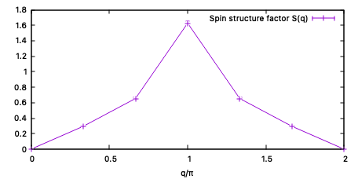

1.2. 一次元Hubbard模型¶
このチュートリアルでは、次の式で定義されるハーフフィリングにおける一次元Hubbard模型の基底状態とそのスピン・電荷相関を計算します。
このチュートリアルは、 ISSPデータリポジトリ に登録されているチュートリアルを元にしています。
なお、 samples/tutorial_1.2 にある run.sh を実行すると、これから説明する一連のコマンドが全て実行されます。
1.2.1. スタンダードモードの入力ファイル生成¶
まずは、スタンダードモードの入力ファイルを生成します。
samples/tutorial_1.2 に移動したのち、次のコマンドを実行してください。:
python3 MakeInput.py input.toml
実行すると、基底状態の最適化用入力ファイル stan_opt.in と物理量測定用入力ファイル stan_aft.in 、および物理量測定時に OneBodyG と TwoBodyG の入力として使われる green1 と green2 が生成されます。pythonスクリプト MakeInput.py の入力ファイル input.toml の中身は下記のとおりです:
[lattice]
Lx = 6
Ly = 1
Lz = 1
orb_num = 1
model_type = "Hubbard"
[mVMC]
sub_x = 2
sub_y = 1
sub_z = 1
[mVMC_aft]
modpara = "modpara.def"
directory = "aft"
このファイルはtoml形式で記述されています。 [lattice] には格子の情報が、 [mVMC] には波動関数に課す副格子構造を記載します。 [mVMC_aft] に記載されているパラメータは物理量測定計算の終了後の後処理スクリプトで使われます。
[lattice] セクションの Lx は \(x\) 方向の長さ、 Ly は \(y\) 方向の長さ、 Lz は \(z\) 方向の長さ、 orb_num はユニットセル内の軌道数(内部自由度)を指定します。 model_type は模型の種類を指定します。 Spin, Hubbard, Kondo の3つから選ぶ必要がありますが、ここではHubbard模型を指定しています。以上をまとめると、今回の計算では、ユニットセル内の自由度が1、長さが6格子点のHubbard鎖の系が指定されていることになります。 なお、相互作用などのその他のパラメータは、 MakeInput.py 内で直接指定されています。 このチュートリアルでは、 \(t=1\) 、 \(U=4\) としています。
[mVMC] セクションの sub_x は \(x\) 方向の副格子長、 sub_y は \(y\) 方向の副格子長、 sub_z は \(z\) 方向の副格子長を指定します。副格子構造を波動関数に課すことで変分パラメータ数を減らすことができるため、計算精度にあまり影響のない範囲で適切な副格子構造を課すことができれば効率の良い計算を実行できます。今回の計算では、反強磁性的な相関は取り入れたいので、2格子分の副格子を課しています。
[mVMC_aft] セクションの modpara は物理量測定時に使われ
ModPara で指定されるパラメータファイルを指定します。 directory は後処理スクリプトが読み込むディレクトリを指定しています。
1.2.2. 波動関数の最適化¶
次に、基底状態の最適化を行います。次のコマンドを実行してください。:
vmcdry.out ./stan_opt.in
vmc.out namelist.def
cp ./output/zqp_opt.dat .
mv output opt
厳密対角化計算で得られた基底エネルギーは \(E_{0}=-3.668706\) です。mVMCでの最適化過程が、この値に収束していくことを確認してください。
1.2.3. 物理量測定¶
波動関数の最適化では、エネルギーやバリアンスなどの情報は得られますが、状態を特徴づける相関関数は計算されません。物理量測定計算を行うことで、相関関数などの物理量を計算することができます。次のコマンドを実行してください。:
vmcdry.out ./stan_aft.in
cp green1 greenone.def
cp green2 greentwo.def
vmc.out namelist.def ./zqp_opt.dat
mv output aft
2行目と3行目の cp コマンドを実行することで、 vmcdry.out で生成されるデフォルトの相関関数ファイルを上書きします。
物理量測定計算の結果は aft ディレクトリに格納されています。 zvo_cisajs_***.dat には OneBodyG で指定した一体相関関数 \(\langle {c^{\dagger}_{i\sigma_i} c_{j\sigma_j}} \rangle\) の値が、 zvo_cisajscktalt_***.dat には TwoBodyG で指定した二体相関関数 \(\langle {c^{\dagger}_{i\sigma_i} c_{j\sigma_j} c^{\dagger}_{k\sigma_k} c_{l\sigma_l}} \rangle\) の値が出力されています。( *** はbin番号を表しています。)
1.2.4. 後処理スクリプトの実行¶
最後に、後処理スクリプトを実行します。mVMCでは、物理量を測定する際にモンテカルロサンプリングを用います。また、出力される相関関数も \(\langle {c^{\dagger}_{i\sigma_i} c_{j\sigma_j} c^{\dagger}_{k\sigma_k} c_{l\sigma_l}} \rangle\) のようにサイト・スピン番号に対して一般的な形式になっています。そのため、求めたい物理量を相関関数から計算した後で、それらを統計処理する必要があります。次のコマンドを実行してください。:
python3 VMClocal.py input.toml
python3 VMCcor.py input.toml
VMClocal.py を実行すると、統計処理したエネルギーと局所密度の値が Ene.dat と occ.dat にそれぞれ出力されます。mVMCは変分計算ですので、 mVMCで得られるエネルギー値は、厳密対角化計算で得られた基底エネルギーより高くなっているか、統計誤差の範囲で一致しているかのどちらかになっているはずです。 Ene.dat を確認してみると:
# Ene err_Ene Ene/(All_site) err_Ene/(All_site)
-3.664422 0.004452 -0.610737 0.000742
となっています。(並列数やサンプル数、環境等によって値が異なる可能性があります。)一列目が全エネルギーの期待値、二列目がその統計誤差、三列目が単位サイトあたりのエネルギー期待値、四列目がその統計誤差です。mVMCにより得られた全エネルギー値は、前述した厳密対角化法による真の基底エネルギー \(E_{0}=-3.668706\) と統計誤差の範囲内で一致していることを確認できます。
VMCcor.py を実行すると、相関関数から計算された物理量がいくつかのファイルに出力されます。例えば、 SqNq.dat には、スピンと電荷の構造因子が出力されています。
(1.8)¶\[S(q) = \frac{1}{L} \sum_{i,j} e^{iq(r_i-r_j)} \langle \boldsymbol{S}_i \cdot \boldsymbol{S}_j \rangle,\ \boldsymbol{S}_i = \frac{1}{2} \sum_{\alpha, \beta} c^{\dagger}_{i\alpha} \boldsymbol{\sigma}_{\alpha\beta}c_{i\beta}\](1.9)¶\[S^z(q) = \frac{1}{L} \sum_{i,j} e^{iq(r_i-r_j)} \langle S^z_i S^z_j \rangle\](1.10)¶\[N(q) = \frac{1}{L} \sum_{i,j} e^{iq(r_i-r_j)} \langle n_i \cdot n_j \rangle,\ n_i = n_{i\uparrow} + n_{i\downarrow}\]
ここで、 \(L\) は系のサイズを、 \(\boldsymbol{\sigma}_{\alpha\beta}\) はパウリ行列を表しています。
gnuplotを使って、 SqNq.dat に出力されているスピン構造因子 \(S(q)\) をプロットしてみましょう。:
gnuplot
set xlabel "q/{/Symbol p}"
p "SqNq.dat" u ($1/3):3:4 w yerrorlines t "Spin structure factor S(q)"
を実行すると、次のようなグラフが得られます。
波数 \(q=\pi\) でスピン構造因子がピークを持っていることが確認できます。これは、反強磁性的な相関が発達していることを示しています。
1.2.4.1. 演習¶
厳密対角化ソフトウェアパッケージ \(\mathcal{H}\Phi\) (https://www.pasums.issp.u-tokyo.ac.jp/hphi/) を用いて、基底状態のエネルギーと相関関数を計算し、mVMCの計算結果と比較してみてください。また、 MakeInput.py を修正して、相互作用パラメータ \(U\) の値を変えた場合、スピン構造因子がどのように変化するのかを調べてみてください。

{kind=link}